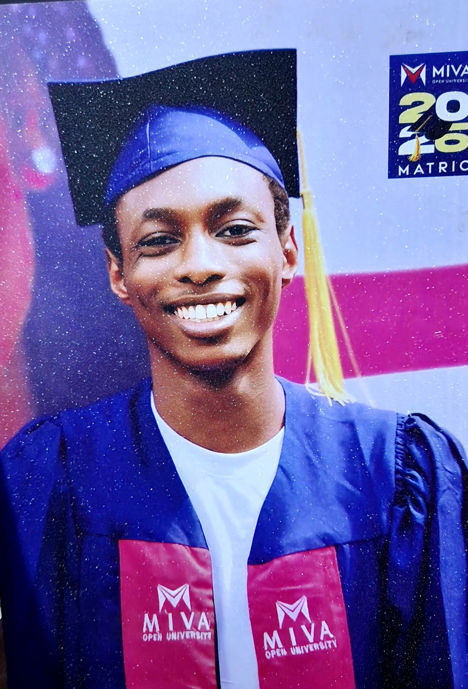

About Me
...
Who Am I?
My name is Chijioke Chidera, a Cybersecurity student at Miva Open University.
I am passionate about technology, computer systems, digital security and continuous learning. I aspire to develop the knowledge and skills required to contribute to the cybersecurity industry.
Educational Background
| Institution | Course | Status |
|---|---|---|
| Miva Open University | Cybersecurity | Currently Studying |
Technical Interests
- Network Security
- Ethical Hacking
- Computer Networking
- Web Development
- Digital Forensics
Career Aspirations
My goal is to build a successful career in cybersecurity and become a skilled professional capable of helping protect digital systems and information.
Hobbies and Interests
- Learning new technologies
- Exploring computer systems
- Reading
- Personal development
- Being up to date with the current world meta